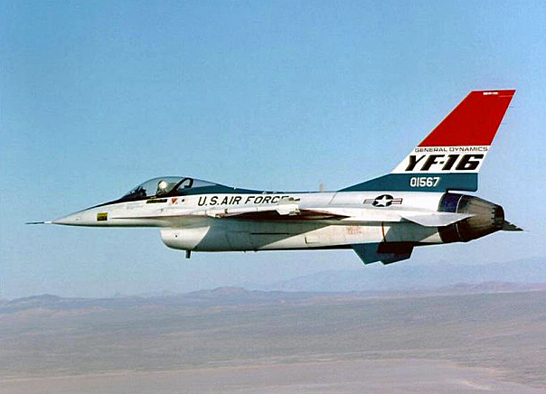

History & Development of the F-16
Jump to a section: Origins | Lightweight Fighter Program | First Flight | Key Milestones
The F-16 Fighting Falcon did not show up out of no where. It was the product of a fierce internal debate within the United States Air Force in the early 1970s, driven by a small but passionate group of reformers who believed that American fighter design had gone dangerously off course. The result of that debate changed the American fighter jet philosophy.

The YF-16 prototype during the 1974 Lightweight Fighter competitive fly-off against the YF-17.
Origins: The Fighter Mafia
By the late 1960s, American combat aircraft had grown progressively larger, heavier, and more expensive. The F-4 Phantom II, the USAF’s primary fighter, was a powerful machine but its performance in Vietnam-era dogfights against smaller, lighter North Vietnamese MiG fighters exposed a serious problem: sheer power and sophisticated missiles were no substitute for manoeuvrability and pilot skill at close range. The USAF’s kill-to-loss ratio was far lower than expected, raising urgent questions about fighter design philosophy.
A group of officers and civilian analysts — known informally as the “Fighter Mafia” — began advocating for a return to fundamentals. Led by Colonel John Boyd, a legendary fighter pilot and military strategist who had developed the influential Energy-Maneuverability (E-M) theory of air combat, the group argued that the next American fighter should be small, light, and built first and foremost for turning performance. Boyd’s E-M theory quantified a fighter’s ability to gain or lose energy during manoeuvres, providing a mathematical basis for comparing combat aircraft for the first time.
The Lightweight Fighter (LWF) Program
In 1972, the USAF officially launched the Lightweight Fighter (LWF) program, issuing a Request for Proposals to industry for an affordable, highly manoeuvrable day fighter. The goal was not necessarily to buy the winning aircraft, but to demonstrate the technology and force competition between designs. Five companies submitted proposals; the USAF selected two for prototype development:
- General Dynamics YF-16
- Designed by Harry Hillaker, the YF-16 was a single-engine design powered by the Pratt & Whitney F100 turbofan — the same engine used in the F-15 Eagle. It featured a blended wing-body design, a reclined ejection seat to improve pilot g-tolerance, a side-mounted control stick, and a fixed forward fuselage air intake. The design prioritised close-in dogfight performance above everything else, and every kilogram of weight was scrutinised and eliminated if not strictly necessary.
- Northrop YF-17
- Northrop’s YF-17 was a twin-engine design powered by two General Electric YJ101 engines. It used twin vertical stabilisers and blended strake extensions along the fuselage to generate additional lift at high angles of attack. The YF-17 was also an outstanding performer, particularly in low-speed, high-angle-of-attack manoeuvring. Though it lost the LWF competition, the YF-17 was subsequently developed into the F/A-18 Hornet for the US Navy, ensuring both designs reached production.
In January 1975, after an extensive competitive fly-off that included direct comparison of performance, reliability, and cost, the USAF selected the YF-16 as the winner. The decision was driven primarily by the YF-16’s superior sustained turn rate and its lower operating costs compared with the twin-engine YF-17. The production aircraft was designated the F-16A (single-seat) and F-16B (two-seat trainer).
First Flight and Entry into Service
The first production F-16A was delivered to the 388th Tactical Fighter Wing at Hill Air Force Base, Utah, on August 17, 1978. The F-16 formally achieved initial operational capability (IOC) with the USAF on October 1, 1980. From this point, production and export orders accelerated rapidly, with Belgium, the Netherlands, Denmark, and Norway — collectively known as the European Participating Air Forces (EPAF) — committing to purchase the F-16 as a replacement for their ageing F-104 Starfighters. This European co-production agreement was one of the largest military aviation procurement decisions in NATO history.
Key Development Milestones
| Year | Event | Significance |
|---|---|---|
| 1972 | USAF launches Lightweight Fighter (LWF) program | Sets requirements for the competition that will produce the F-16 |
| January 1974 | Accidental first flight of YF-16 prototype | Pilot Oestricher takes off during a taxi test to avoid ground accident |
| February 1974 | Official first flight of YF-16 | Aircraft confirmed to exceed all performance requirements |
| January 1975 | USAF selects YF-16 over YF-17 in competitive fly-off | F-16 enters full-scale development; European partner nations commit |
| August 1978 | First production F-16A delivered to USAF | Hill AFB receives first operational aircraft |
| October 1980 | F-16 achieves initial operational capability with USAF | Aircraft declared combat-ready |
| July 1981 | Israeli F-16s conduct Operation Opera | First combat use of the F-16; destroys Iraqi Osirak nuclear reactor |
| 1993 | F-16C/D Block 50/52 enters service | Introduces HARM Targeting System and improved avionics |
| 2015 | Lockheed Martin F-16V (Viper) announced | Most advanced F-16 variant; features AESA radar as standard |
| 2023 | US approves F-16 transfers to Ukraine | F-16 enters service in the Russo-Ukrainian War |
← Back to Home